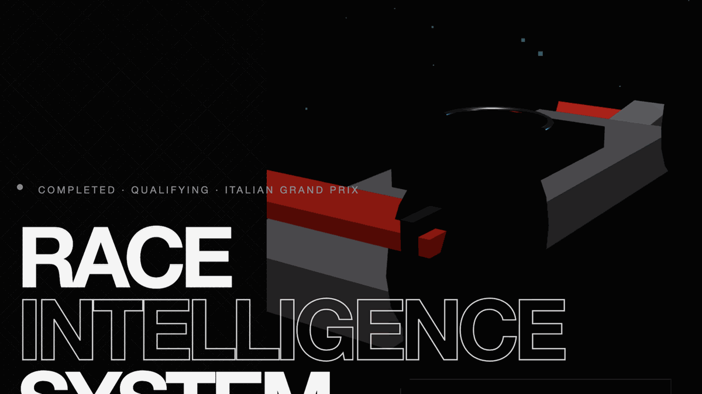

ApexIQ
Sep 2026 · personal project

1. Purpose and tech stack
ApexIQ is a Formula 1 race intelligence dashboard. I built it after PremierIQ, using the
same one-origin layout: Next.js on the public port, FastAPI on localhost, browser only
calls /api. Championship data comes from f1api.dev. Live timing, weather, and
GPS come from OpenF1. Neither needs an API key. Empty feeds stay empty: no fake tyre
temperatures, ERS, or practice interval gaps.
| Layer | Choice | Reason |
|---|---|---|
| API | Python, FastAPI, httpx | Briefing, pit wall, map, telemetry compose on one process |
| Championship | f1api.dev | Standings, calendar, drivers, teams, circuits, compare. No token |
| Live timing / GPS | OpenF1 | Sessions, car_data, location, laps, stints, weather, race control. No token |
| UI | Next.js 15, React 19, TypeScript, Three.js | Single page. Same origin /api proxy. Procedural 3D car, no licensed mesh |
2. Design (request path)
The browser only talks to the Next.js origin. Next proxies /api/* to FastAPI.
FastAPI throttles OpenF1 (about 3 requests a second and 30 a minute), caches composed
feeds, and builds the pit wall and circuit map.
OpenF1 driver numbers are not f1api.dev numbers. The UI joins on name and acronym. Circuit GPS uses a mid-session location window. Sampling the last seconds of a completed practice returns garage coordinates, so that window is skipped if the points have no spatial spread.
3. Features implemented
- Pit wall: position, compound, tyre age, speed, sectors when published
- Circuit trace from OpenF1 location GPS, plus driver dots
- Championship standings and remaining-round window from f1api.dev
- Last-round grid-to-flag, calendar times, 2026 grid, driver compare
- Procedural Three.js car HUD from the selected pit-wall driver
- CORS allowlist, trusted hosts, 120 requests a minute, OpenAPI off unless debug is on
4. Folder structure
ApexIQ/
├── backend/
│ ├── app/main.py
│ ├── app/routes.py
│ ├── app/security.py
│ ├── app/clients/ # f1api.dev, OpenF1, throttle
│ └── app/services/ # briefing, live, map
└── frontend/
├── src/app/api/[...path]/route.ts
├── src/app/page.tsx
├── src/components/hero/CarScene.tsx
├── src/components/live/TrackMap.tsx
└── src/lib/api.ts
5. Timescale
| Phase | When | Work |
|---|---|---|
| Clients and pit wall | Sep 2026 | f1api.dev + OpenF1 clients, command centre, 3D hero |
| Circuit GPS and polish | Sep 2026 | Mid-session location windows, rate-limit cache, UI copy without provider jargon |
| Repo | Sep 2026 | GitHub, README, one-container Dockerfile |
6. Challenges and how they were handled
| Challenge | Approach |
|---|---|
| OpenF1 ~30 requests a minute | Global throttle, composed pit-wall and map caches, slower polls when the session is completed |
| GPS at session end is the garage | Sample a mid-session window. Ignore blobs with almost no x/y spread |
httpx encoding date>= as date>== |
Build OpenF1 query strings by hand so filters are date>=VALUE |
| Driver numbers disagree across APIs | Join on acronym / name, not number |
| Feeds missing tyre temps and ERS | Do not invent them. HUD only shows compound, age, RPM, throttle, gear, speed, DRS |
7. Testing
There is no pytest suite on this repo. Checks were manual against the live APIs:
- Briefing and championship load from f1api.dev
- Pit wall uses OpenF1 session latest without inventing practice gaps
GET /api/live/mapreturns a path with real x/y spread when GPS exists- Empty location windows stay empty in the UI
GET /healthon Next.js
8. Deployment and links
Local: FastAPI on 127.0.0.1:8000, Next on
http://127.0.0.1:3000 with API_INTERNAL_URL pointing at the API.
Open the UI origin, not port 8000. Source is on GitHub. Public demo is one Railway service.